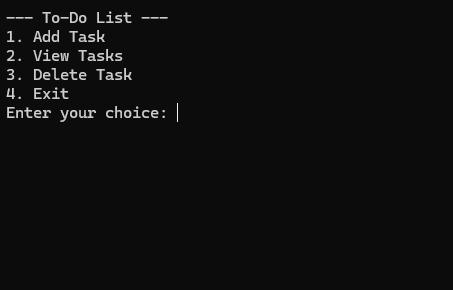

This program is a simple to-do list manager written in C, where you can add,
view, and delete tasks. It allows the user to interact with the list by choosing
options from a menu. The tasks are stored in a 2D character array, and the number
of tasks is tracked by a counter. The user can add a new task, view the list of
existing tasks, delete a task by its number, or exit the program.

Where the idea came from
I asked ChatGPT to give me a C language challenge, and it came up with the idea for this program. It provides a great starting point
for learning basic concepts in C. Working on it will teach a beginner several
important aspects of C programming, such as handling arrays,
working with strings, using functions, and managing user input.
What I Learned
While developing this program, I learned many valuable lessons
that helped improve my understanding of C programming.
Here are some key things I learned:
- Arrays and 2D Arrays: The tasks are stored in a 2D array (tasks[MAX_TASKS][MAX_LENGTH]).
This helped me understand how to work with arrays and how to store strings in arrays.
It also taught me how to manipulate the array elements, which is a fundamental skill in C.
- Working with Strings: Handling strings in C is a little different than in higher-level languages.
In C, strings are essentially arrays of characters, so I had to use functions like fget to read
input from the user and strcspn to remove the newline character that gets added when using fgets.
This taught me the importance of managing string lengths and memory properly
- Functions: I split the program into multiple functions: addTask, viewTasks, and deleteTask.
This helped me practice how to structure a program using functions,
which improves readability and makes code easier to maintain.
- User Input and Validation: The program handles user input in various forms: numeric input for
menu options and task numbers, and string input for adding tasks. I learned how to use scanf to
read numeric input and fgets to read strings. I also learned how to validate user input,
like checking if the entered task number is valid and ensuring that the task list
isn't full before adding a new task.
- Memory Management (Indirect): Even though this program doesn't require dynamic memory allocation,
it still helped me understand how arrays and data structures are managed in memory.
If the program were to expand, I could incorporate dynamic memory allocation using malloc or calloc,
and this would be a natural progression for learning about memory management in C.
- Conditional Statements and Loops: The menu system uses a while loop to repeatedly ask for user input.
Based on the user’s choice, a switch statement is used to decide which action to take.
This helped me strengthen my understanding of how loops and conditionals work in C.
- Error Handling: I also encountered the need to handle cases where things could go wrong.
For example, when trying to delete a task, I had to check if the task number was valid or
if the task list was empty. Learning how to anticipate and handle errors
is an essential part of becoming proficient in C.
Overall, this project taught me a lot about the fundamental concepts of C programming.
It made me more comfortable working with arrays, strings, and user input,
as well as structuring a program logically using functions. For anyone new to C,
I highly recommend trying out a project like this—it’s simple yet full of
opportunities to learn the basics and prepare for more advanced topics.
You can find the full code to this project by clicking HERE